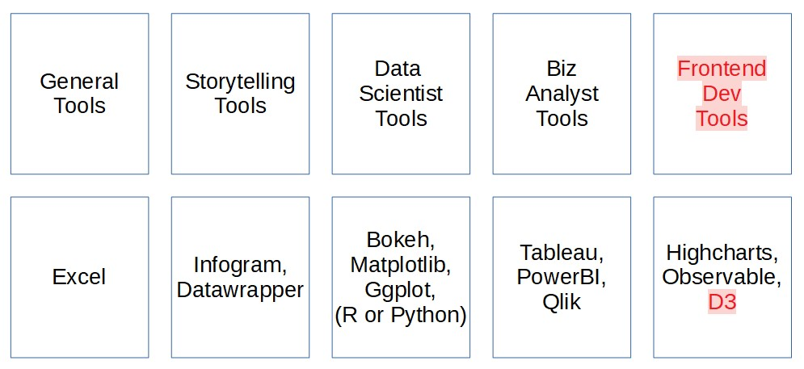
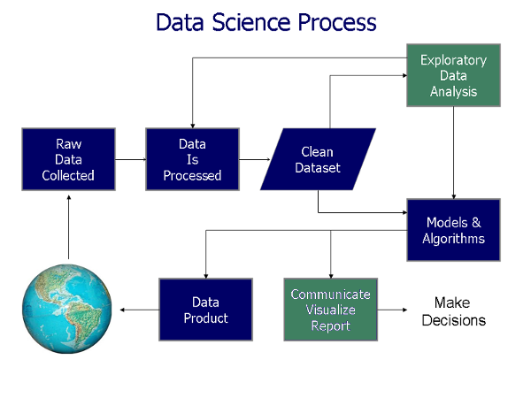
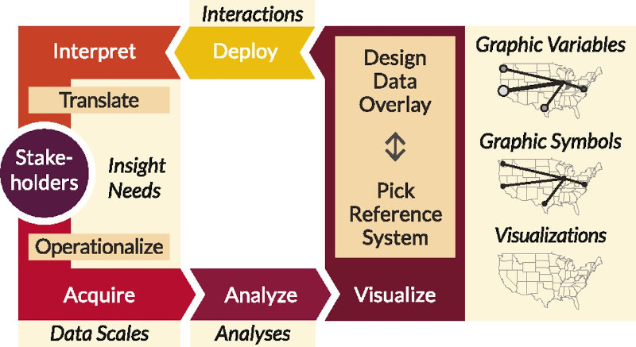

02.526 Interactive Data Viz
Hello
My name is Chi-Loong and I'll be your adjunct lecturer for this course.
Just call me Chi-Loong!
Past lives
I spent half my career in storytelling. I was in journalism and public relations in the tech space for a decade.
The other half is in technology, also about a decade plus. I have had roles in tech start-ups like head of product and engineering.
Current lives
I run my own consulting-based visualization / code studio at V/R, and have done so for the last decade.
Teaching
I have taught three previous semesters of interactive data visualization at SUTD's HASS masters' course — this very module.
I am also an adjunct lecturer at SIT, and I have taught web dev and now teach a technical visualization course to year 3 computer engineering grads.
I have also taught at code schools like General Assembly and SGCodeCampus, mainly on visualization.
Community
I run the local Singapore Data Viz SG and HHSG meetup groups, and am part of the Data Visualization Society (SG chapter).
My own passion project is Visualizing Singapore (viz.sg), a community site for data viz enthusiasts.
Samples

I also do visualization prototypes and dashboards for software products. Clients include A*Star (for MOT), PSA (for MPA), Attilatech (cyber security), etc.
Course vision
There are three ways to approach the domain - research, technical, or industry.
As a practitioner in the space I tend to approach the domain from an industry perspective with a technical slant.
Speakers
For a masters course, I feel that the greatest value is in discussing real-life work and networking.
Hence I tend to invite and curate guest lectures by people in the industry. For 2022 I had 4 guest speakers, and for 2023 I hope to have at least 3.
Speakers range from journalists, to data scientists, to UX practitioners.
Design and code
This course is split up into two components — design and code.
In the design portion, we will go through the academia / research / case studies in what makes for good data visualization design.
In the code portion, we will be building interactive data visualizations for the web.
On technology
Visualizations can be built with all kinds of software tool / cloud-based platforms.
However, for an interactive visualization course I will going through how to do it natively for the web.
This namely means using D3 (Data Driven Documents), the defacto data visualization library for the web.
Viz tools
Will revisit this again in the lecture on why we do visualization.
Why D3
- If you're interested in analytics, Excel / Tableau / PowerBI are good non-coding choices.
- If you're familiar with data science languages, Python or R has graphing libraries (ggplot2, plotly, mathlibplot, etc.)
- D3 is used because you want to build beautiful interactive visualizations for the web. You can implement any interactions you want.
- It also has comprehensive built-in design patterns for visualizations, like geo projections, force simulations, hierarchies, etc.
- Lastly, it is open source and free.
Why web
- For web visualization there are many libraries / tools / platforms beyond D3.
- If you are pressed for time for a standard chart type, it might be easier to use other tools / libraries built on top of D3. For example, NVD3 or C3.js.
- You can also use other libraries (leaflet, highcharts, etc.) to build the components you need.
- There are even full platforms - Mapbox, Cesium, etc. that will allow you to host and build on top of those platforms.
This is my bias. You are not going to get glassy visualizations for the web without coding it natively for the web.
Course expectations
Basic web development is a technical requirement for this course. It is expected that you know some basic HTML / CSS / JS.
We'll go through some recap refreshers, but it will be quick.
If you absolutely have no experience in this area you probably will have to do your own reading and self-revision.
There are lots of tutorials on the web for HTML / CSS / JS.
It will be great if you are more technical and know more — CSS /JS frameworks, web architecture frontend / backend, etc. — but it is not required for this course.
Course expectations 2
On the JS side, you should hopefully also know how to pull data from APIs, have some familarity in data formats like JSON (E.g. GeoJSON).
Beyond HTML / CSS / JS, we will also be using Git, a version control tool.
Students will be publishing their assignments and work on GitHub and GitPages.
If you do not have a GitHub account, please do sign up for one.
I will do a survey later, and also go through with the class on self-introduction and understand your expectations of the course.
Course expectations 3
However, if you prefer to use other web-based tools for projects, you are free to do so.
The only requirement is that you need to be able to publish your work on a GitHub repository (through GitPages).
For coordination for this module, we will be using communication tool Slack.
I'll collect emails from all of you folks so i can add you to the slack account.
The spirit of the course
I see the masters course as a learning and networking experience, and I hope you see it as something beyond grades.
Grade wise, as long as you complete the 5 assignments and the visualization projects, I will try to give you a good grade (last year were all B+ and above).
It is an opportunity to connect with people in this domain and to see what it is about.
Let's all learn and have some fun.
Self-intros and questions!
1a: Introduction to Data Viz
Why data visualization?
Wiki definition
To communicate data / information clearly and effectively by encoding it as graphical visual objects (e.g. points, lines).
Historical viz

Charles Joseph Minard's 1869 diagram of Napoleonic France's invasion of Russia.
It shows the number of men in Napoleon’s 1812 Russian campaign army, their movements, as well as the temperature they encountered on the return path.
Historical viz 2

John Snow's map of the 1854 cholera outbreak in Soho, which helped debunk the then-dominant miasma theory.
Examples shamelessly stolen from Edward Tufte's Visual Display of Quantitative Visualization (1983)
Exploratory or explanatory analysis?
A 3rd category: Engineering a data visualization product / tool to automate exploratory / explanatory analysis.
Visualization analysis
- What: What data does the user see?
- Why: Why does the user want to use a viz tool?
- How: How is the visual encoding and design choices chosen?
These three questions form the data — task — idiom trio.
A broader definition
Computer-based visualization systems provide visual representations of datasets designed to help people carry out tasks more effectively.
Reading: Data visualization literacy framework
Reading: Chapter 1, Visualization Analysis and Design (Tamara Munzner)
Course structure recap
Let's take a closer look at how this course is structured.
Big picture questions 1
- Why have a human in the decsision making loop?
- Why have a computer in the loop?
- Why use an interface / external representation?
- Why depend on vision?
- Why visualize data in detail?
- Why use interactivity?
Big picture questions 2
- Why is the viz idiom design space huge?
- Why focus on tasks? i.e. why over what (data) and how (idiom)
- Why focus on effectiveness? i.e. why validate visualizations?
- Why are a lot of designs ineffective?
- Why is validation difficult?
- What resource limitations are there?
Questions?
Chi-Loong | V/R